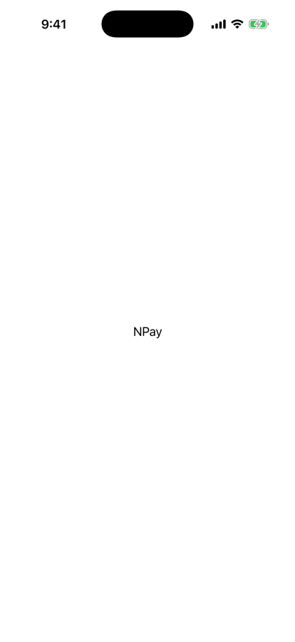
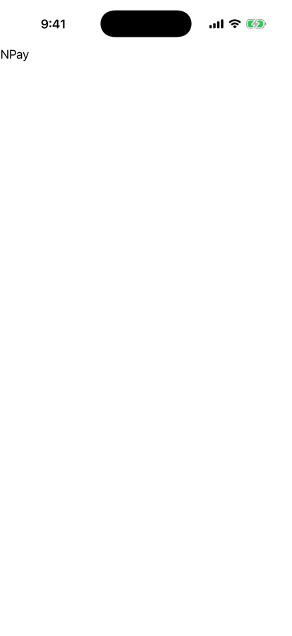
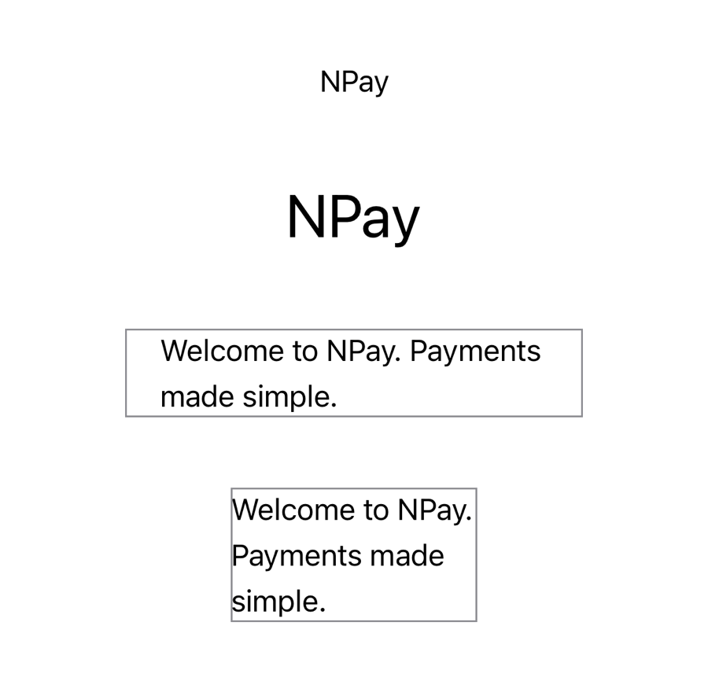
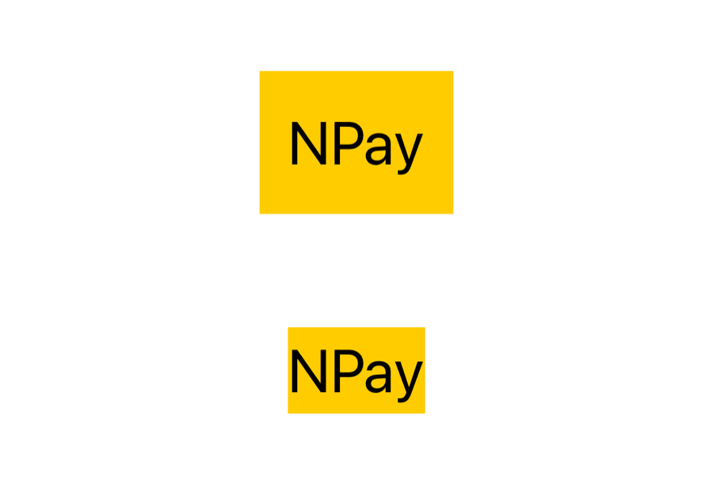
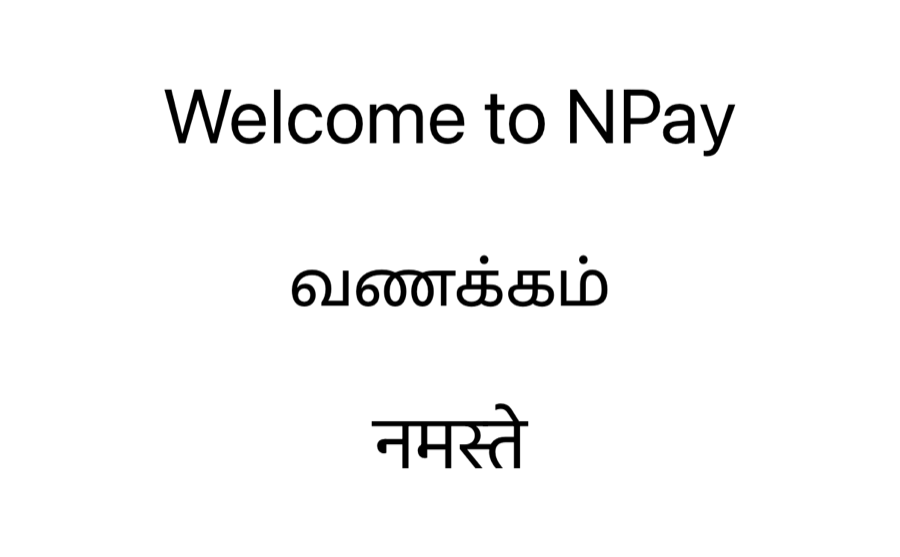

Unit 02 · Lesson 2.1
SwiftUI Text:
From Source Code to Screen
One word on an iPhone: NPay. What do Swift, SwiftUI and iOS do to put it there?
Lesson 2.1 · Outcomes
By the end, you will be able to explain
What Text("NPay") is, and how Swift finds it
Why ContentView conforms to View
What some View hides
How SwiftUI sizes and places text
How modifiers wrap views, and why order matters
Unicode, localization and Dynamic Type
Lesson 2.1 · Where we are
Today: NPay’s first screen
Unit 02 · SwiftUI Fundamentals
Text.Part 1
The first screen
One requirement, one word
Part 1 · The engineering story (section 1)
Milestone 2.1: NPay’s name, centred
- When NPay launches, show its name
- In the centre of the screen
- No icons, buttons or layouts
- One component, investigated thoroughly
How every lesson runs
Part 1 · Build (section 2)
Our first SwiftUI view
import SwiftUI
struct ContentView: View {
var body: some View {
Text("NPay")
}
}
#Preview {
ContentView()
}- ⌘R, or the Canvas preview
- NPay appears near the centre

iPhone 17 simulator, iOS 26.5
Part 2
What is Text?
A struct, found by the compiler
Part 2 · What is Text? (section 3)
Text("NPay") makes a value
| Part | Meaning |
|---|---|
Text | SwiftUI struct |
(...) | initializer call |
"NPay" | string literal |
| Result | a Text value describing UI content |
- No: a declarative view value
- SwiftUI lays out and renders it separately
struct Customer {
let name: String
}
let customer = Customer(name: "Ravi") // a Customer value
let title = Text("NPay") // a Text valueCustomermodels domain dataTextdescribes interface content
Part 2 · How Swift finds Text (section 4)
From import SwiftUI to a Text value
- Imported module information resolves
Text - No lookup by name at run time
Text,Image,Button,VStack, …
Part 2 · Jump to Definition (section 4)
Read the interface; don’t memorise it
- Hold ⌘ and click
Text - Choose Jump to Definition
Textis a struct- Its View conformance is an extension
import SwiftUIbrings SwiftUICore along
// SwiftUI.swiftinterface @_exported import SwiftUICore // SwiftUICore.swiftinterface @frozen public struct Text : Equatable, Sendable extension Text : View
The text expects roughly public struct Text: View; the exact interface differs by Xcode and SDK version.
Part 3
View and some View
A protocol and a hidden type
Part 3 · The View protocol (section 5)
Conformance, not inheritance
// Teaching approximation, not Apple's exact API
protocol View {
associatedtype Body: View
@ViewBuilder
var body: Body { get }
}Body: each view’s own body typebody: the view’s content@ViewBuilder: composing child views
associatedtype Body : View
@ViewBuilder @MainActor var body: Self.Body { get }
- ContentView doesn’t inherit from Text
- Its body returns something that is a View
Part 3 · some View (section 6)
some View: one concrete type, hidden
var body: some View {
Text("NPay")
}| Compiler’s view | |
|---|---|
| Declared | some View |
| Underlying type | Text |
| Requirement | Text conforms to View |
ContentView.body: Text
with a .frame (Part 5):
ModifiedContent<Text, _FlexFrameLayout>
- One underlying type per declaration
- Not a different type on each evaluation
- Matters for conditional views, later
Part 4
From value to pixels
What happens at runtime
Part 4 · At runtime (section 7) · conceptual
From launch to visible text
Text value ≠ drawing text: the framework measures, places and renders it.Step 6
Part 5
Layout: place and size
Parents propose, children choose
Part 5 · Why centred? (section 8)
Centred by the layout, not by Text
Text("NPay")Centred
Text("NPay")
.frame(maxWidth: .infinity, maxHeight: .infinity,
alignment: .topLeading)
Top leading
- The surrounding layout decides position, not Text
- The safe area matters too;
.framecomes in the layout lessons
Part 5 · Measuring text (section 9)
Parents propose, text chooses, parents place
- Font metrics
- Glyph advances
- Line breaks
- Language
- Proposed size
- So text adapts to device widths
Part 5 · Measured in the simulator (section 9)
Same sentence, two proposals
let line = "Welcome to NPay. Payments made simple."
Text("NPay") // .body
Text("NPay").font(.largeTitle)
Text(line).frame(width: 260).border(.gray)
Text(line).frame(width: 140).border(.gray)"NPay", .body: 39.7 × 24.3 pt
"NPay", .largeTitle: 77.3 × 48.7 pt
proposed 260 wide: 221.0 × 50.3 pt
proposed 140 wide: 140.0 × 76.3 pt

iPhone 17 simulator, iOS 26.5
Part 6
Modifiers
Styling returns new descriptions
Part 6 · Font styling (section 10)
.largeTitle is inferred from context
Text("NPay")
.font(.largeTitle) // short form
Text("NPay")
.font(Font.largeTitle) // long form.font(): a SwiftUI modifier.largeTitle: a semantic font style
.fontexpects aFont- so
.largeTitlemeansFont.largeTitle
.body,.title,.largeTitlefollow platform typography- and Dynamic Type: the user’s chosen text size (Part 8)
Part 6 · Modifier return types (section 11)
Some modifiers keep Text; others wrap it
let original = Text("NPay")
let styled = original.font(.largeTitle)
let padded = original.padding()
print(type(of: original))
print(type(of: styled))
print(type(of: padded))Run in a SwiftUI context: here, a view’s .task in the simulator.
Text
Text
ModifiedContent<Text, _PaddingLayout>
- Text’s own
.fontoverload returns Text - General View modifiers wrap:
ModifiedContent - Protocol extensions + generics + overloads
Part 6 · Modifier order (section 12)
Same modifiers, different order, different result
Text("NPay")
.padding()
.background(.yellow)- Background covers the padded area
Text("NPay")
.background(.yellow)
.padding()- Background covers the text only

A above, B below (.largeTitle)
- Both take 109.3 × 80.7 pt: same layout size, different structure
- Modifiers aren’t decoration; each wraps the one before
Part 7
Unicode and localization
Text for every language
Part 7 · Unicode (section 13)
One visible letter is not one byte
Text("Welcome to NPay")
Text("வணக்கம்")
Text("नमस्ते")- Unicode text and shaping
- Line breaking and language rules

iPhone 17 simulator, iOS 26.5
NPay: 4 characters, 4 scalars, 4 bytes
வணக்கம்: 5 characters, 7 scalars, 21 bytes
नमस्ते: 3 characters, 6 scalars, 18 bytes
Part 7 · Localization (section 13)
Text("…") looks it up; verbatim doesn’t
Text("Welcome to NPay") // a localization key
Text(verbatim: "Welcome to NPay") // shown as written
Device language: English

Device language: Tamil (with a Tamil strings file)
- Localization in depth when NPay becomes multilingual
Part 8
Final NPay code
Lesson 2.1’s screen
Part 8 · Final NPay code (section 14)
NPay at the end of Lesson 2.1
import SwiftUI
struct ContentView: View {
var body: some View {
Text("NPay")
.font(.largeTitle)
.bold()
.foregroundStyle(.blue)
}
}
#Preview {
ContentView()
}
Default text size

Settings: larger text (Accessibility XL)
Default: 82.7 × 48.7 pt
Accessibility XL: 125.3 × 74.0 pt
type(of: body): Text
Lesson 2.1 · Recap
What to remember
Text is a value
a description, not pixels
Layout decides
propose, choose, place
Modifiers wrap
order changes the structure
Review
Check your understanding
Check your understanding · 1 of 11
What does Text("NPay") create?
- A
UILabelinstance - A SwiftUI
Textvalue - Pixels directly in a graphics buffer
A struct value describing UI content; SwiftUI lays out and renders it separately.
Common trap: Thinking SwiftUI views are UIKit objects or pixels.
Check your understanding · 2 of 11
Why can ContentView.body return Text?
Textinherits fromContentViewTextconforms toViewTextis a special Swift keyword
body must return a View; Text conforms to View (an extension in the SDK interface).
Common trap: Thinking in class inheritance.
Check your understanding · 3 of 11
What does some View mean?
- Any different View type at run time
- One underlying concrete type conforming to View
- A dynamically typed object
An opaque type: one hidden concrete type per declaration. For ContentView it printed Text.
Common trap: Reading some as “any”.
Check your understanding · 4 of 11
Does evaluating body necessarily redraw the entire screen?
Evaluating body produces a description; layout and rendering are separate stages that the framework manages.
Common trap: Equating a new description with new pixels everywhere.
Check your understanding · 5 of 11
Why does .largeTitle work without writing Font.largeTitle?
- Run-time reflection
- Contextual type inference
- An implicit global variable
.font expects a Font, so the compiler looks .largeTitle up on Font.
Common trap: Thinking it is resolved while the app runs.
Check your understanding · 6 of 11
What does .padding() generally do?
- Mutates the original
Text - Returns a padded view description
- Adds spaces to the string
It returns a wrapper: the simulator printed ModifiedContent<Text, _PaddingLayout>.
Common trap: Thinking modifiers mutate the view.
Check your understanding · 7 of 11
Does the order of modifiers affect the result?
Each modifier wraps the one before: padding then background colours the padded area; the reverse colours only the text.
Common trap: Treating modifiers as a set of style flags.
Check your understanding · 8 of 11
What influences how Text is measured?
- Only the number of characters
- Font, content, proposed size and layout constraints
- Only the screen resolution
The same sentence measured 221 × 50 pt when offered 260 pt, and 140 × 76 pt when offered 140 pt.
Common trap: Counting characters.
Check your understanding · 9 of 11
Does every Text value create its own UILabel?
How SwiftUI renders text is its own implementation detail; a Text value is a description, not a UIKit view.
Common trap: Mapping SwiftUI views one-to-one onto UIKit views.
Check your understanding · 10 of 11
Which API displays text without treating it as a localization key?
Text("Welcome")Text(verbatim: "Welcome")Text.localized()
In Tamil, Text("Welcome to NPay") was translated; the verbatim line stayed in English.
Common trap: Assuming every string literal is shown as written.
Check your understanding · 11 of 11
Which version has the larger yellow background?
A: Text("NPay").padding(24).background(.yellow)
B: Text("NPay").background(.yellow).padding(24)
In A the background wraps the padded view, so it is 24 pt bigger on every side; in B it wraps only the text, and the padding is clear space outside.
Common trap: Thinking both are the same because the modifiers are the same.
Lesson 2.1 · Where this goes next
Where this goes next
| Lesson | Topic | Builds on today |
|---|---|---|
| 2.2 | SwiftUI Image & SF Symbols | a payment icon above today’s title |
| Later | Layout lessons | .frame, proposals and alignment in depth |
| Later | Conditional views | why some View needs one type |
| Later | Localization | NPay’s multilingual interface |
Lesson 2.1 · Lab
Investigate Text yourself
Reproduce today’s evidence in your own simulator.
- Build Section 2’s
ContentView; run with ⌘R and in the canvas. - ⌘-click
Text→ Jump to Definition: find the struct and its View conformance. - Add the top-leading
.frame; predict, run, remove it. - Print the three
type(of:)results from a button. - Swap
.padding()and.background(.yellow); predict first. - End in the Section 14 state; try a larger text size.
Button("Print types") {
let original = Text("NPay")
print(type(of: original))
print(type(of: original.font(.largeTitle)))
print(type(of: original.padding()))
}- A screenshot per experiment
- Your three
type(of:)lines, each explained
Lesson 2.1 complete
SwiftUI Text:
From Source Code to Screen
Next: Lesson 2.2 — SwiftUI Image & SF Symbols